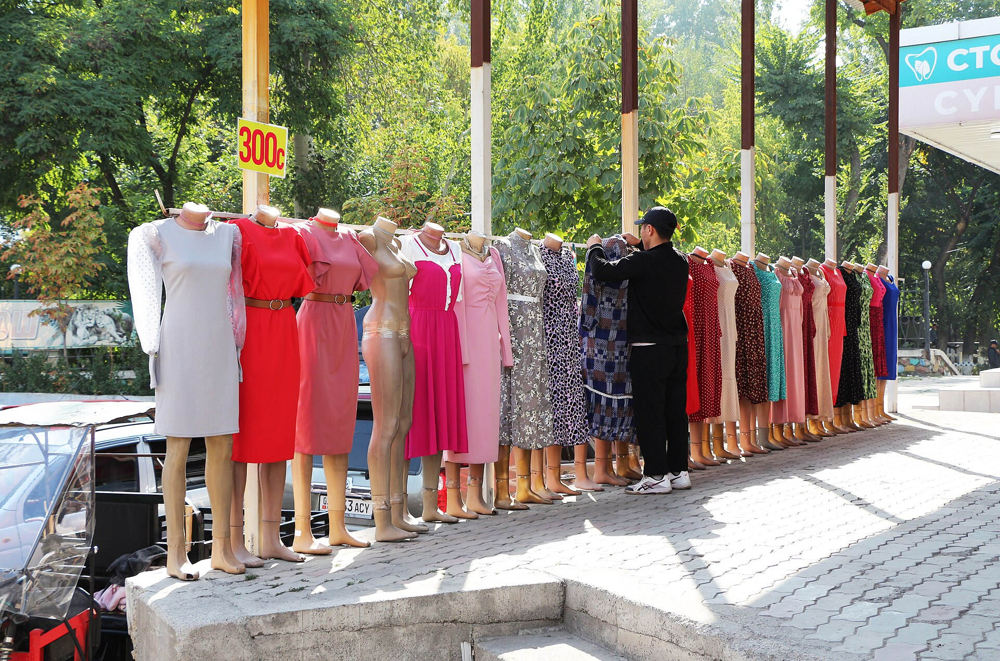

Экономика Кыргызстана за семь месяцев выросла на 11,1 процента, инфляция выше 11 процентов
Рост остаётся самым высоким показателем в регионе. По данным Национального банка, по состоянию на 24 августа годовая инфляция составила 11,7 процента.

Экономика Кыргызстана за первые семь месяцев 2026 года выросла на 11,1 процента. Этот показатель считается самым высоким темпом роста в Центральной Азии. При этом домохозяйства сталкиваются с двузначной инфляцией.
В июле годовой рост цен составил 11,5 процента. По данным Национального банка, по состоянию на 24 августа годовая инфляция достигла 11,7 процента; с начала года цены выросли на 7,3 процента.
За счёт чего рост
Согласно официальным аналитическим материалам, основные источники экономического роста — резкое увеличение объёма инвестиций и сила внутреннего потребительского спроса. Строительство, торговля и сектор услуг входят в число отраслей, внёсших наибольший вклад в рост.
Евразийский банк развития (ЕАБР) прогнозирует по итогам 2026 года рост на уровне 10,2 процента.
Причины инфляционного давления
В росте цен отмечено несколько факторов. Рост мировых цен на нефть на фоне конфликта на Ближнем Востоке и опасений по поводу поставок нефти повысил стоимость импортного топлива. А это через транспортные и производственные издержки распространилось на всю экономику.
Сила внутреннего спроса также указывается как фактор, усиливающий ценовое давление: когда потребление растёт быстрее возможностей предложения, инфляция ускоряется.
- Рост ВВП (январь — июль 2026): +11,1%
- Годовая инфляция (июль): 11,5%
- Годовая инфляция (24 августа): 11,7%
- Рост цен с начала года: +7,3%
- Прогноз ЕАБР (2026): рост 10,2%, инфляция ~11,5%
- Цель Национального банка: 5–7%
Отклонение от цели
Национальный банк Кыргызстана определил в качестве цели по инфляции диапазон 5–7 процентов. Согласно прогнозу ЕАБР, по итогам года инфляция составит около 11,5 процента — то есть заметно выше целевого диапазона.
Центральные банки в такой ситуации обычно стремятся охладить спрос, повышая основную ставку или удерживая её на высоком уровне. Однако эта мера может оказать давление на экономический рост — поэтому перед регуляторами встаёт вопрос выбора (trade-off).
Показатель бедности
Даже в условиях быстрого роста вопрос распределения доходов остаётся открытым. Двузначная инфляция, особенно при росте цен на продовольствие, тяжелее сказывается на домохозяйствах с низкими доходами, поскольку доля продовольствия в их бюджете выше.
Региональный фон
В экономике Кыргызстана важное место занимают реэкспорт, горнодобывающая отрасль и денежные переводы из-за рубежа. В течение 2026 года страна объявила несколько крупных логистических и горнодобывающих проектов: 2 сентября — соглашение о транзитной торговле с Пакистаном, 10 сентября — меморандум по логистическому центру «Сары-Таш» вблизи границы с Китаем, а 13 сентября был запущен завод золоторудного проекта Altyn Tor на основе индийских инвестиций.
Международная оценка
Международный валютный фонд предупреждал о рисках, связанных с быстрым ростом экономики Кыргызстана. Такие предупреждения обычно касаются быстрого расширения объёмов кредитования, внешнего баланса и устойчивости бюджета.
Отраслевая структура роста
В экономике Кыргызстана в последние годы в число самых быстрорастущих отраслей вошли строительство, торговля и услуги. В промышленности же основное место занимают добыча и переработка золота.
Реэкспорт также остаётся важным фактором: часть товаров, ввезённых из Китая, отправляется в соседние государства. Эта деятельность фиксируется в статистике как товарооборот и вносит заметный вклад в общий показатель.
Поэтому при оценке экономического роста важны данные в разрезе отраслей: рост за счёт реэкспорта отличается от расширения внутренних производственных мощностей.
Золотой сектор
Золото — крупнейшая статья экспорта Кыргызстана. Крупнейший рудник страны — Кумтор — долгие годы находился в центре спорных отношений с иностранным оператором и в 2021 году был передан под государственный контроль.
13 сентября 2026 года на месторождении Солтон-Сары был запущен перерабатывающий завод проекта Altyn Tor, реализуемого на основе инвестиций индийской компании. В проект вложено 34,2 млн долларов; по соглашению произведённое золото передаётся государственной компании «Кыргызалтын».
Инфляция и денежно-кредитная политика
Национальный банк определил целевой диапазон по инфляции в 5–7 процентов. Фактический показатель почти вдвое выше этого диапазона.
Центральные банки в такой ситуации обычно повышают основную ставку или удерживают её на высоком уровне. Это приводит к удорожанию кредитов и охлаждению спроса, но одновременно оказывает давление на экономический рост.
Инфляция же, вызванная ценами импорта (импортируемая инфляция), не поддаётся полному контролю инструментами внутренней денежно-кредитной политики — это создаёт дополнительную сложность для регулятора.
Денежные переводы и миграция
Денежные переводы из-за рубежа считаются важным источником доходов домохозяйств Кыргызстана. Основное направление — Россия.
В первом полугодии 2026 года въезд граждан Узбекистана, Таджикистана и Кыргызстана в Россию с целью работы сократился на 15 процентов: в январе — июне было зафиксировано примерно 1,9 млн трудовых въездов, тогда как годом ранее этот показатель превышал 2,3 млн.
С 1 сентября в Москве и Московской области введено дополнительное требование о регистрации для граждан безвизовых государств, остающихся более 90 дней. Эти правила могут в среднесрочной перспективе отразиться на потоке денежных переводов.
Инвестиционный поток
В сентябре 2026 года в Кыргызстане было объявлено несколько инвестиционных инициатив: 2 сентября подписано соглашение о транзитной торговле с Пакистаном, 10 сентября заключён меморандум по логистическому центру «Сары-Таш» вблизи границы с Китаем, предусматривающий инвестиции до 100 млн долларов, а 11 сентября подписан документ с казахстанской компанией по комплексу переработки топлива стоимостью 350 млн долларов в Таласской области.
Большинство этих проектов пока находится на стадии меморандума; их влияние на экономический рост будет зависеть от степени реализации.
Международная оценка
Международный валютный фонд предупреждал о рисках, связанных с быстрорастущей экономикой Кыргызстана. Такие предупреждения обычно относятся к быстрому расширению объёмов кредитования, состоянию внешнего баланса и устойчивости бюджета.
Евразийский банк развития прогнозирует по итогам 2026 года рост на уровне 10,2 процента, а инфляцию — примерно 11,5 процента.
Бюджет и внешний долг
В условиях быстрого роста доходы бюджета также увеличиваются, однако структура расходов и бремя внешнего долга остаются основными показателями устойчивости. Значительная часть внешнего долга Кыргызстана состоит из обязательств перед Экспортно-импортным банком Китая.
Крупные инфраструктурные проекты могут потребовать привлечения дополнительного долга; поэтому международные институты уделяют особое внимание оценке окупаемости проектов.
При интерпретации статистических данных следует учитывать ещё один аспект: высокий темп роста в относительно небольшой экономике рассчитывается от низкой базы, и поэтому изменение в абсолютных показателях может быть меньше, чем изменение в процентах.